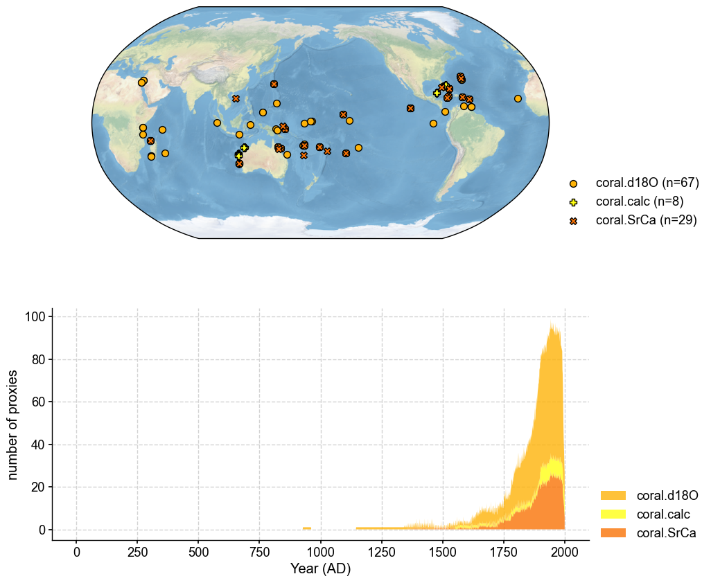
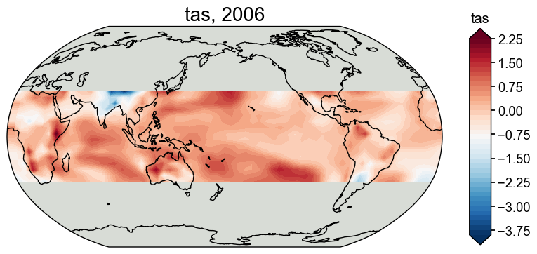
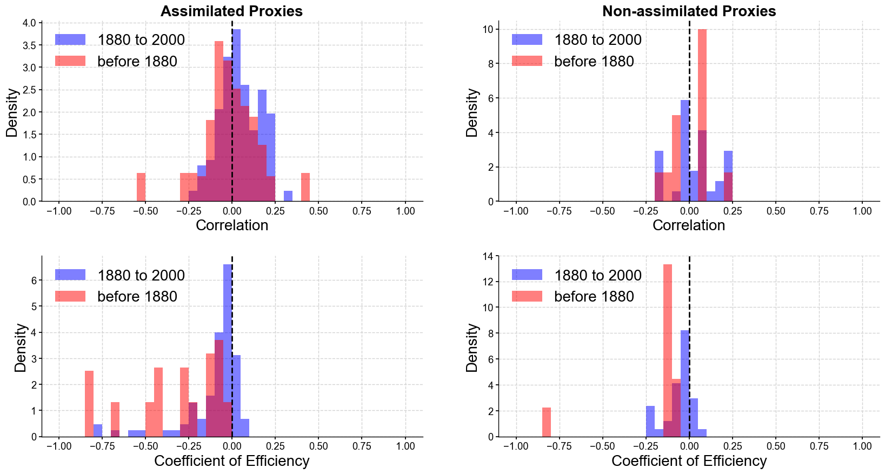

Proxy Independent Verification#
[1]:
%load_ext autoreload
%autoreload 2
import cfr
print(cfr.__version__)
2025.7.28
Load the PAGES2k database#
[2]:
job = cfr.ReconJob()
job.load_proxydb('PAGES2kv2')
Filter the database#
We only need the corals in this example.
[3]:
job.filter_proxydb(by='ptype', keys=['coral'])
fig, ax = job.proxydb.plot(plot_count=True)

Annualize the database#
[4]:
job.annualize_proxydb(months=[12, 1, 2], ptypes=['coral'], verbose=True)
>>> job.configs["annualize_proxydb_months"] = [12, 1, 2]
>>> job.configs["annualize_proxydb_ptypes"] = ['coral']
Annualizing ProxyDatabase: 100%|██████████| 104/104 [00:01<00:00, 52.89it/s]
>>> 99 records remaining
>>> job.proxydb updated
Load the gridded climate data#
Load the model prior#
[5]:
job.load_clim(
tag='prior',
path_dict={
'tas': 'iCESM_past1000historical/tas',
},
anom_period=(1951, 1980),
)
>>> The target file seems existed at: ./data/tas_sfc_Amon_iCESM_past1000historical_085001-200512.nc . Loading from it instead of downloading ...
Load the instrumental observations#
[6]:
job.load_clim(
tag='obs',
path_dict={
'tas': 'gistemp1200_GHCNv4_ERSSTv5',
},
rename_dict={'tas': 'tempanomaly'},
anom_period=(1951, 1980),
)
>>> The target file seems existed at: ./data/gistemp1200_GHCNv4_ERSSTv5.nc.gz . Loading from it instead of downloading ...
Proxy system modeling#
Calibrating the proxy system models#
[7]:
ptype_psm_dict = {
'coral.d18O': 'Linear',
'coral.calc': 'Linear',
'coral.SrCa': 'Linear',
}
ptype_season_dict = {
'coral.d18O': [12, 1, 2],
'coral.calc': [12, 1, 2],
'coral.SrCa': [12, 1, 2],
}
ptype_clim_dict = {
'coral.d18O': ['tas'],
'coral.calc': ['tas'],
'coral.SrCa': ['tas'],
}
job.calib_psms(
ptype_psm_dict=ptype_psm_dict,
ptype_season_dict=ptype_season_dict,
ptype_clim_dict=ptype_clim_dict,
calib_period=(1850, 2015),
verbose=True,
)
>>> job.configs["ptype_psm_dict"] = {'coral.SrCa': 'Linear', 'coral.calc': 'Linear', 'coral.d18O': 'Linear'}
>>> job.configs["ptype_season_dict"] = {'coral.SrCa': [12, 1, 2], 'coral.calc': [12, 1, 2], 'coral.d18O': [12, 1, 2]}
>>> job.configs["ptype_clim_dict"] = {'coral.SrCa': ['tas'], 'coral.calc': ['tas'], 'coral.d18O': ['tas']}
>>> job.configs["psm_calib_period"] = (1850, 2015)
Calibrating the PSMs: 19%|█▉ | 19/99 [00:00<00:01, 40.75it/s]
The number of overlapped data points is 14 < 25. Skipping ...
The number of overlapped data points is 20 < 25. Skipping ...
The number of overlapped data points is 22 < 25. Skipping ...
Calibrating the PSMs: 31%|███▏ | 31/99 [00:00<00:01, 47.71it/s]
The number of overlapped data points is 9 < 25. Skipping ...
The number of overlapped data points is 24 < 25. Skipping ...
Calibrating the PSMs: 56%|█████▌ | 55/99 [00:01<00:00, 52.13it/s]
The number of overlapped data points is 22 < 25. Skipping ...
The number of overlapped data points is 22 < 25. Skipping ...
The number of overlapped data points is 0 < 25. Skipping ...
Calibrating the PSMs: 80%|███████▉ | 79/99 [00:01<00:00, 52.85it/s]
The number of overlapped data points is 21 < 25. Skipping ...
Calibrating the PSMs: 100%|██████████| 99/99 [00:02<00:00, 47.00it/s]
>>> PSM for Ocn_144 failed to be calibrated.
>>> PSM for Ocn_149 failed to be calibrated.
>>> PSM for Ocn_150 failed to be calibrated.
>>> PSM for Ocn_145 failed to be calibrated.
>>> PSM for Ocn_152 failed to be calibrated.
>>> PSM for Ocn_164 failed to be calibrated.
>>> PSM for Ocn_165 failed to be calibrated.
>>> PSM for Ocn_138 failed to be calibrated.
>>> PSM for Ocn_183 failed to be calibrated.
>>> 90 records tagged "calibrated" with ProxyRecord.psm created
Forwarding the proxy system models#
[8]:
job.forward_psms()
Forwarding the PSMs: 100%|██████████| 90/90 [00:08<00:00, 10.88it/s]
Annualizing, regridding, and cropping the prior field#
[9]:
job.annualize_clim(tag='prior', months=[12, 1, 2], verbose=True)
job.regrid_clim(tag='prior', nlat=42, nlon=63, verbose=True)
job.crop_clim(tag='prior', lat_min=-35, lat_max=35, verbose=True)
>>> job.configs["prior_annualize_months"] = [12, 1, 2]
>>> Processing tas ...
>>> job.prior updated
>>> job.configs["prior_regrid_nlat"] = 42
>>> job.configs["prior_regrid_nlon"] = 63
>>> Processing tas ...
>>> job.configs["prior_lat_min"] = -35
>>> job.configs["prior_lat_max"] = 35
>>> job.configs["prior_lon_min"] = 0
>>> job.configs["prior_lon_max"] = 360
>>> Processing tas ...
[10]:
fig, ax = job.prior['tas'][-1].plot()

Run the DA solver#
[11]:
dirpath = './recons/lmr-real-pages2k-iv'
job.run_da_mc(
save_dirpath=dirpath,
recon_seeds=list(range(1, 11)),
verbose=True,
)
>>> job.configs["recon_period"] = [0, 2000]
>>> job.configs["recon_loc_rad"] = 25000
>>> job.configs["recon_timescale"] = 1
>>> job.configs["recon_vars"] = ['tas']
>>> job.configs["nens"] = 100
>>> job.configs["recon_seeds"] = [1, 2, 3, 4, 5, 6, 7, 8, 9, 10]
>>> job.configs["assim_frac"] = 0.75
>>> job.configs["save_dirpath"] = ./recons/lmr-real-pages2k-iv
>>> job.configs["compress_params"] = {'zlib': True}
>>> job.configs["output_full_ens"] = False
>>> job.configs["recon_sampling_mode"] = fixed
>>> job.configs["trim_prior"] = True
>>> job.configs["allownan"] = False
>>> seed: 1 | max: 10
KF updating: 100%|██████████| 2001/2001 [00:07<00:00, 259.28it/s]
>>> Reconstructed fields saved to: ./recons/lmr-real-pages2k-iv/job_r01_recon.nc
>>> seed: 2 | max: 10
KF updating: 100%|██████████| 2001/2001 [00:09<00:00, 205.44it/s]
>>> Reconstructed fields saved to: ./recons/lmr-real-pages2k-iv/job_r02_recon.nc
>>> seed: 3 | max: 10
KF updating: 100%|██████████| 2001/2001 [00:10<00:00, 195.57it/s]
>>> Reconstructed fields saved to: ./recons/lmr-real-pages2k-iv/job_r03_recon.nc
>>> seed: 4 | max: 10
KF updating: 100%|██████████| 2001/2001 [00:10<00:00, 190.49it/s]
>>> Reconstructed fields saved to: ./recons/lmr-real-pages2k-iv/job_r04_recon.nc
>>> seed: 5 | max: 10
KF updating: 100%|██████████| 2001/2001 [00:10<00:00, 187.58it/s]
>>> Reconstructed fields saved to: ./recons/lmr-real-pages2k-iv/job_r05_recon.nc
>>> seed: 6 | max: 10
KF updating: 100%|██████████| 2001/2001 [00:10<00:00, 185.06it/s]
>>> Reconstructed fields saved to: ./recons/lmr-real-pages2k-iv/job_r06_recon.nc
>>> seed: 7 | max: 10
KF updating: 100%|██████████| 2001/2001 [00:10<00:00, 185.12it/s]
>>> Reconstructed fields saved to: ./recons/lmr-real-pages2k-iv/job_r07_recon.nc
>>> seed: 8 | max: 10
KF updating: 100%|██████████| 2001/2001 [00:10<00:00, 184.29it/s]
>>> Reconstructed fields saved to: ./recons/lmr-real-pages2k-iv/job_r08_recon.nc
>>> seed: 9 | max: 10
KF updating: 100%|██████████| 2001/2001 [00:10<00:00, 182.03it/s]
>>> Reconstructed fields saved to: ./recons/lmr-real-pages2k-iv/job_r09_recon.nc
>>> seed: 10 | max: 10
KF updating: 100%|██████████| 2001/2001 [00:10<00:00, 183.81it/s]
>>> Reconstructed fields saved to: ./recons/lmr-real-pages2k-iv/job_r10_recon.nc
>>> DONE! Total time spent: 2.51 mins.
[12]:
# save the job
job.save(dirpath)
Independent Verification#
[24]:
%%time
# del job
res = cfr.ReconRes(dirpath)
res.load(['nino3.4', 'tas'], verbose=True)
# load the assim and eval proxy labels
res.load_proxylabels(verbose=True)
# calcualte verification statistics
info = res.indpdt_verif(dirpath)
>>> ReconRes.recons["nino3.4"] created
>>> ReconRes.da["nino3.4"] created
>>> ReconRes.recons["tas"] created
>>> ReconRes.da["tas"] created
>>> ReconRes.proxy_labels created
Forwarding the PSMs: 100%|██████████| 90/90 [00:08<00:00, 10.71it/s]
Forwarding the PSMs: 100%|██████████| 90/90 [00:08<00:00, 10.86it/s]
Forwarding the PSMs: 100%|██████████| 90/90 [00:08<00:00, 10.66it/s]
Forwarding the PSMs: 100%|██████████| 90/90 [00:08<00:00, 10.90it/s]
Forwarding the PSMs: 100%|██████████| 90/90 [00:08<00:00, 10.72it/s]
Forwarding the PSMs: 100%|██████████| 90/90 [00:08<00:00, 10.61it/s]
Forwarding the PSMs: 100%|██████████| 90/90 [00:08<00:00, 10.92it/s]
Forwarding the PSMs: 100%|██████████| 90/90 [00:08<00:00, 10.63it/s]
Forwarding the PSMs: 100%|██████████| 90/90 [00:08<00:00, 10.93it/s]
Forwarding the PSMs: 100%|██████████| 90/90 [00:08<00:00, 10.57it/s]
CPU times: user 1min 26s, sys: 778 ms, total: 1min 27s
Wall time: 1min 28s
[25]:
fig, axs = res.plot_indpdt_verif()
cfr.showfig(fig)
cfr.savefig(fig, './recons/indp.pdf')

Figure saved at: "recons/indp.pdf"
[ ]:
res.indpdt_info
| name | seasonality | assim | all_corr | all_ce | in_corr | in_ce | before_corr | before_ce | |
|---|---|---|---|---|---|---|---|---|---|
| 0 | Ocn_065 | [12, 1, 2] | True | -0.020908 | -0.568751 | -0.054764 | -0.011768 | 0.023986 | -1.274442 |
| 1 | Ocn_075 | [12, 1, 2] | True | -0.037912 | -0.008439 | 0.109152 | -0.007393 | -0.125915 | -0.009779 |
| 2 | Ocn_078 | [12, 1, 2] | True | 0.245147 | -0.070573 | 0.023250 | -0.128030 | 0.417165 | -1.940210 |
| 3 | Ocn_167 | [12, 1, 2] | True | -0.080107 | -0.280092 | -0.080107 | -0.280092 | NaN | NaN |
| 4 | Ocn_096 | [12, 1, 2] | False | 0.091076 | -0.295778 | 0.216488 | 0.021983 | 0.055508 | -1.109874 |
| ... | ... | ... | ... | ... | ... | ... | ... | ... | ... |
| 895 | Ocn_087 | [12, 1, 2] | True | 0.032357 | -0.074791 | 0.019147 | -0.060850 | 0.040361 | -0.082167 |
| 896 | Ocn_153 | [12, 1, 2] | True | 0.296108 | -0.229486 | 0.241391 | -0.126477 | 0.089466 | -2.810480 |
| 897 | Ocn_169 | [12, 1, 2] | True | -0.173925 | -0.144552 | -0.173925 | -0.144552 | NaN | NaN |
| 898 | Ocn_071 | [12, 1, 2] | True | 0.078836 | -0.164450 | 0.078836 | -0.164450 | NaN | NaN |
| 899 | Ocn_072 | [12, 1, 2] | True | 0.168815 | -0.087681 | 0.168815 | -0.087681 | NaN | NaN |
900 rows × 9 columns
[ ]: